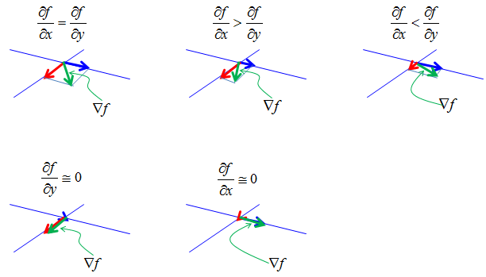

|
Calculus - Gradient Home : www.sharetechnote.com |
|
Mathematical Definition of Gradient (2 variable case) is as follows. The practical meaning of the gradient is "a vector representing the direction of the steepest downward path at specified point". Do you understand how the following mathematical expression represent the steepest path ? If you understand this, you don't have to read this page any more.
As you see from the mathematical definition, gradien is a vector meaning that it has a magnitude and direction and you have to understand what the magnitude indicate and what the direction indicate.
Let's suppose you have a function (two variables) as shown below (left side). Now take one rectangular segment of the surface and magnify it as shown on the right side. Now draw the vectors represented by vector i and j. The vector i is in line with blue vector and j is in line with red vector in this example. i and j vector are unit vectors meaning that their magnitude are 1. The real size of the blue vector and blue vector is determined by the slope of the side of surface segment(green rectangle) in x direction and the real size of the blue vector and red vector is determined by the slope of the side of surface segment(green rectangle) in y direction. Make it sure that you clearly understand this (the meaning of the illustration on top right.) Now you have the two vectors marked in blue and red (again make it sure that you know the meaning of the blue and red vector). If you sum up the two vectors, you will have another vector marked in a green vector. That is the gradient at the point. Do you understand now how you get the blue and red vector and what they mean, and how you get the green vector and what it mean ?
Just by looking at the illustration shown above, you may think that the size of blue vector and red vector would always be similar and the green vector (gradient vector) would be about 45 degree angle from the two vectors. It is not true, the size of the blue and red vector and direction of green vector can vary widely depending on the value obtained by the differentials in each direction. Followings are some of the examples.

If you calculate the gradient vector in many different points on the contour graph, you can show the slope at those points. The gradient vectors are always right angle to the tangential line on the countour curve.
|